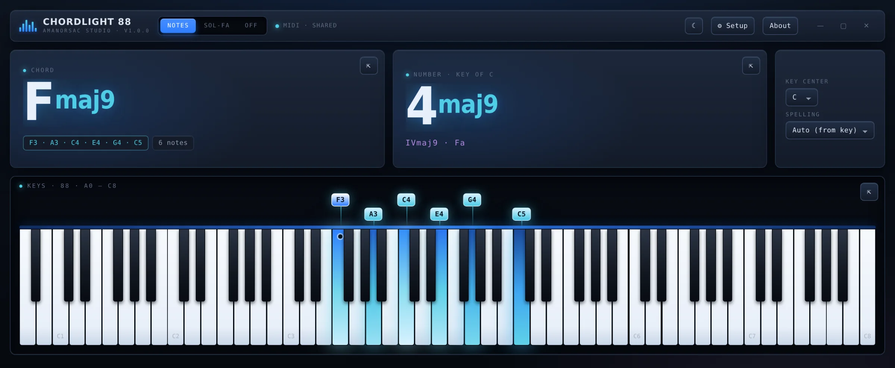
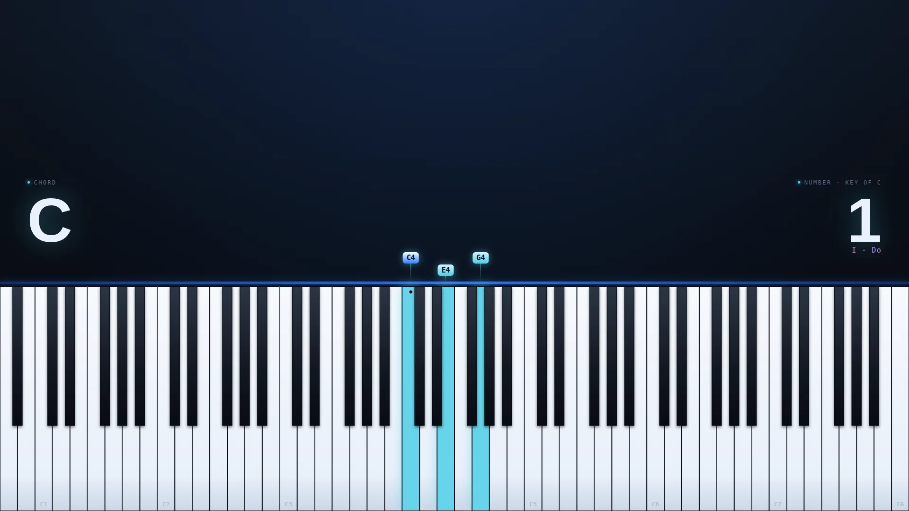
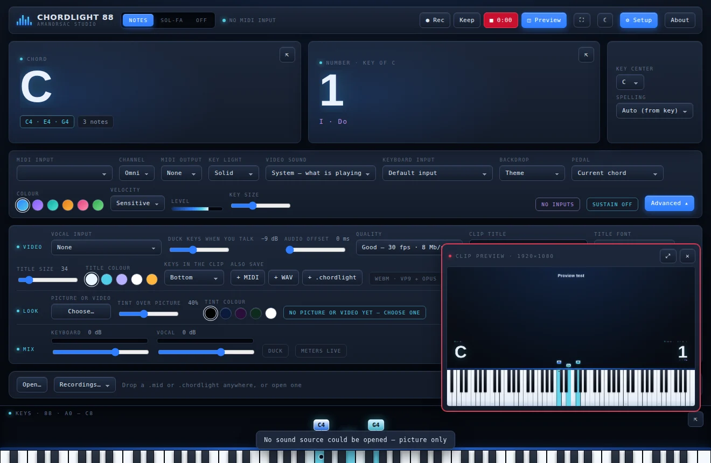
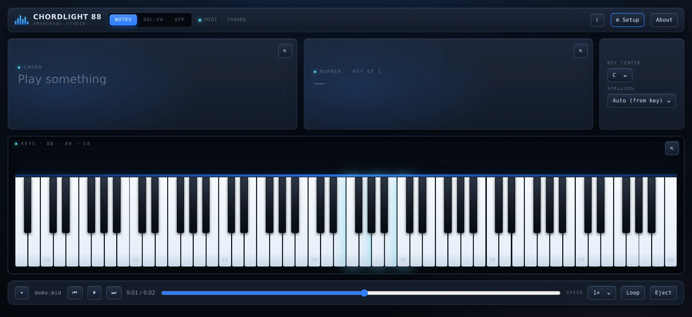
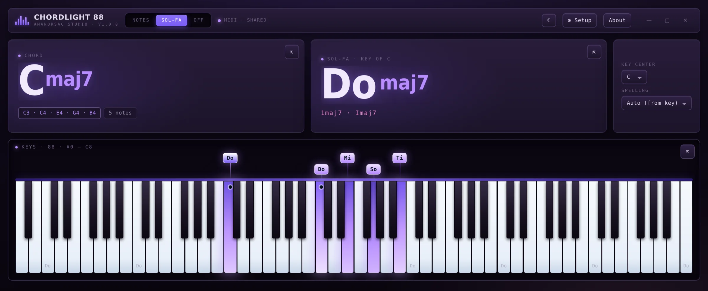
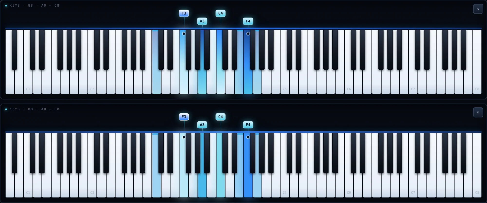
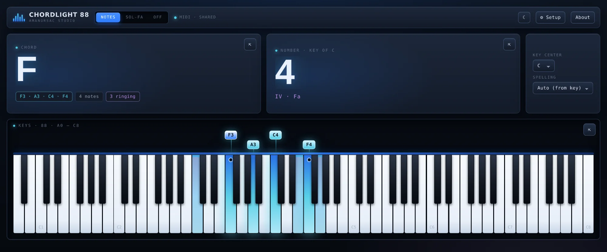
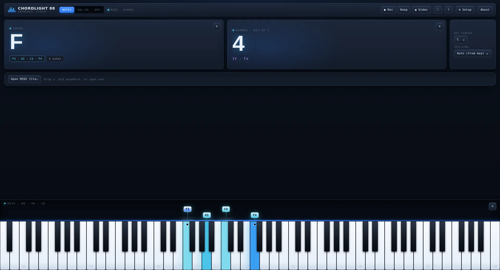
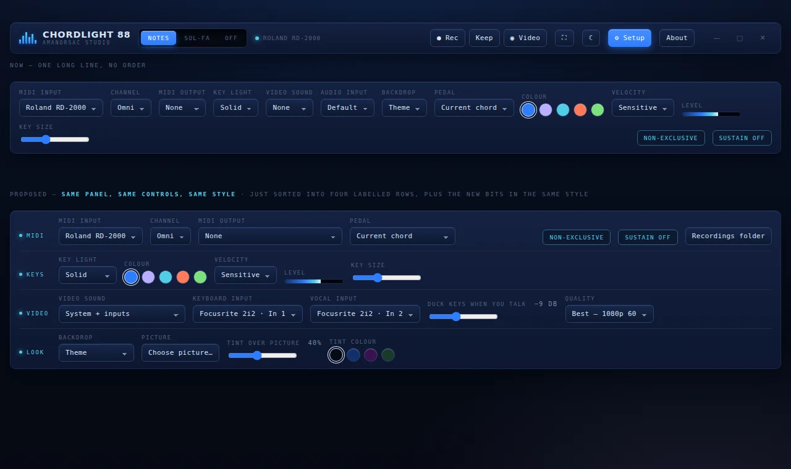

See what your hands are playing. Now record it, and let it draw the lesson video.
Chordlight 88 sits beside any MIDI keyboard and shows what your hands are playing, the moment you play it: the chord name, the Nashville number in your key, the sol-fa, and the notes lit on a full 88-key stage. Version 2.0 turns that readout into content. Press Rec and the take is saved as MIDI, as WAV, or as a .chordlight file that reopens with the lights and the audio in sync. Press Video and the app draws its own 1080p clip, ready for YouTube, WhatsApp or a course platform, without a screen recorder. And it still never takes your MIDI port.
$24 once, early bird on 2.0 · full price $48 · version 2.0.1 · one key, two computers · no account in the app, no analytics, no telemetry
Listen · 1 min 20 s
Stephen on what Chordlight 88 does, and what is new in 2.0.

Six notes down · Fmaj9 · 4maj9 in the key of C · lit by velocity
Version 2.0 · a free update for everyone who has it
Forty-two seconds: the live readout, the Advanced panel, and a clip the app drew itself.
Press Rec. The take is saved as MIDI, as 24-bit WAV, or as a .chordlight file that reopens with the lights and the audio together. Keep rescues the last five minutes even when you forgot to press anything.
Press Video. The app draws its own 1080p clip, not a screen capture: your lesson title, a picture or looping video behind it, a readout plate, and the last four chords climbing away from the keys.
A microphone input beside the keyboard, with meters. Speak and the keys duck under your voice by themselves. An audio offset lines up Bluetooth and USB latency.
Already have Chordlight 88? 2.0 is yours at no charge. Open Amanorsac Hub and the update is waiting; your key carries over.
The clip
Nothing on your screen is recorded. Chordlight renders the frame itself at 1080p, or 4K at Best quality, so it looks the same whatever your windows are doing. System audio and your microphone are mixed in. MP4 where the system supports it; WebM where it does not, and the app says which.

An actual frame of a recorded clip: title, readout plates, the chord trail, the keys at the bottom.
The lesson title in the font, size and colour you choose. Behind it a picture, a looping video, or a tint. Chroma green or blue when the edit happens somewhere else.
Three layouts, so the keys sit where the frame needs them. The readout plate keeps the chord readable over anything.
The Clip Preview panel shows the clip as it will be recorded while you set it up, so the first take is the one you keep.

The Clip Preview panel, live, next to the Advanced settings that shape it.
The take

A take playing back: the lights follow the recording, and the transport sits along the bottom.
A standard .mid file of exactly what you played, for the DAW or the notation program.
24-bit, 48 kHz audio from the keyboard and the microphone, mixed as you set them.
One shareable take: the MIDI, the audio and the title in a single file. Anyone with Chordlight opens it and sees the lights and hears the audio together.
The port
1→3apps on one controller at once
Open a chord tool on Windows and it claims the MIDI port for itself. Kontakt goes quiet, or the DAW stops receiving, or the app reports the device as busy, so the thing that was meant to help you play stops you playing.
Chordlight opens no port exclusively. It listens alongside whatever else is holding the controller: your DAW, your sampler and Chordlight all hear the same keyboard at the same time. All inputs at once if you like. Virtual cables appear like any hardware port, and a keyboard plugged in mid-session shows up without a restart.
Three readings of every chord
Chord displays name chords in letters. A large part of the keyboard-playing world, worship, gospel, choral and most of the teaching world, works in numbers and in sol-fa. Chordlight reads all three at once, from the same hands. Switch with one click, or show all three in pop-out windows.

One switch · Cmaj7 in C reads Do maj7 · a triad on 4 reads Fa major
Every chord after that reads as a number in that key. Fmaj9 in C is 4maj9, with the Roman numeral under it. Spelling follows the key, or force sharps or flats.
Do Di Re Mo Mi Fa Fi So Si La Ta Ti. Chromatic syllables included, not just the seven.
Root, quality, slash bass and the notes sounding, with the bass note marked on the keybed.
The stage
Velocity-sensitive lighting, so the harder the note, the brighter it reads. Note labels above the keys, sustain shown while the pedal holds it, and a key size and accent colour to taste.

The same chord played soft, then hard. The light follows the touch.

Pedal down. The notes that are still ringing stay lit, and the readout counts them.
Built for a camera
The chord, the number and the keys each detach into their own always-on-top window for a second screen or a stream overlay, and each docks back on its own. The readout geometry is fixed, so a two-character name and a nine-character name occupy the same space and a recording never jumps when the chord does.

Key height is yours to set, from a strip along the bottom of a stream to a keybed that fills a projector.
Setup and Advanced
Setup holds the MIDI input, channel, accent and key size. Advanced opens the rest: the vocal input and ducking, the quality, the clip title and font, the chord trail, what else to save, the backdrop, the plate and the mix strips. Six accents, light and dark, and your own tint over a backdrop.

Setup with Advanced open. Everything the clip needs, in one drawer.
Who it is for
Students watch the chord and the number appear as you play. The clip is the lesson hand-out.
Nashville numbers in the key of the song, read off a second screen or a pop-out window.
A clean, branded clip of the keys and the chords, drawn by the app, with a picture or video behind it, or chroma green for the edit.
Hear a voicing, see what it is called. Sol-fa for those who learned that way.
$24Early bird · full price $48
Twenty-four dollars while the early bird lasts, forty-eight after. One key covers two computers, and you move it yourself with Deactivate this device. The only network traffic is the two licence calls, activation and an occasional check-in, and it keeps working offline for thirty days between them. It reads your MIDI input and your microphone, and nothing else on your machine.
See the specification| Platforms | Windows 10 and 11 (x64) · macOS 12 and later (Apple silicon and Intel) |
|---|---|
| Format | Standalone application. Windows: a zip, unzip and run. macOS: disk image. |
| Range | 88 keys, A0 – C8, velocity-sensitive lighting, sustain shown |
| MIDI | Non-exclusive input, every port including virtual cables, one input or all at once, per-channel or omni, hot-plug |
| Readouts | Chord name · Nashville number · Roman numeral · sol-fa · note list and chord quality |
| Key centre | Set once; numbers and spelling follow. Auto spelling from the key, or force sharps or flats. |
| Record | MIDI (.mid) · 24-bit 48 kHz WAV · .chordlight take. Keep rescues the last five minutes. |
| Video | 1080p drawn by the app, 4K at Best. Title, font, size and colour; keys top, middle or bottom; readout plate; chord trail; backdrop picture or looping video; chroma green or blue. MP4 where available, WebM otherwise. |
| Mix | Keyboard and vocal inputs with meters, ducking, and an audio offset for Bluetooth or USB latency |
| Windows | Main window plus three detachable always-on-top pop-outs |
| Appearance | Light and dark, six accents, your own tint over a backdrop, adjustable key height |
| Licence | One key, two computers, moved yourself with Deactivate this device. Works offline for 30 days between check-ins. |
| Network | Two licence calls to amanorsac.studio. No account in the app, no analytics, no telemetry. |
| Updates | Amanorsac Hub. 2.0 is free for everyone who has 1.x. |
Being straight about this is what keeps the reviews honest.